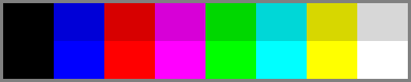
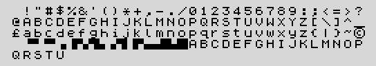

La máquina
Esta página describe cómo es ZX-V: lo que ves en la pantalla, lo que oyes, cómo lo manejas y cuánto sitio tienen tus programas. Es la misma máquina en el emulador y en el hardware real.
De un vistazo
| ZX-V | |
|---|---|
| Procesador | RISC-V de 32 bits a 144 MHz |
| Memoria | 520 KB de RAM en total; unos 94 KB libres para un programa BASIC y hasta 248 KB para un programa nativo |
| Pantalla | 256 × 192 o 512 × 384 píxeles, con borde |
| Colores | 15 de serie; con paletas, 16 por línea de entre 65.536 (hasta 64 en la pantalla), cualquiera en cualquier píxel |
| Páginas de vídeo | Dos, para dibujar en una mientras se ve la otra |
| Sonido | Dos chips de música AY-3-8912 (6 voces) y un beeper, en estéreo |
| Almacenamiento | Tarjeta SD, y la unidad ROM: de serie con los ejemplos |
| Entrada | Teclado USB, ratón y hasta dos mandos |
| Reloj | Fecha y hora, que se mantienen con la máquina apagada |
| Idiomas | Español e inglés |
| Ritmo | 60 imágenes por segundo |
| Salida de imagen | HDMI o DVI, 640 × 480 a 60 Hz |
Arranca directamente en el BASIC, y también ejecuta programas nativos escritos en C para su procesador (ver el SDK).
La pantalla
Dos resoluciones
La pantalla tiene dos modos. Cada uno enseña un rectángulo de píxeles (el papel) rodeado de un borde de color:
| Modo | Píxeles | Texto (caracteres de 8 × 8) | Para qué |
|---|---|---|---|
| 0 | 256 × 192 | 32 columnas × 24 filas | Programas y juegos: la resolución clásica, de píxeles grandes |
| 1 | 512 × 384 | 64 columnas × 48 filas | Gráficos detallados y mucho texto. Es el que usa el editor del BASIC (que también puede ir en modo 0) |
Los dos ocupan la misma superficie de la tele: un píxel del modo 1 mide la
mitad de ancho y la mitad de alto que uno del modo 0. En el BASIC, MODE 0 y
MODE 1 cambian de uno a otro. Tus programas empiezan en el modo 0.
La pantalla es de 640 × 480: alrededor del papel hay un borde de 64 píxeles a cada lado y 48 líneas arriba y abajo.
Los colores
ZX-V tiene 15 colores: ocho de brillo normal y los mismos brillantes (el negro es igual en los dos).

| Número | Color | Número | Color |
|---|---|---|---|
| 0 | Negro | 8 | Negro (brillante) |
| 1 | Azul | 9 | Azul brillante |
| 2 | Rojo | 10 | Rojo brillante |
| 3 | Magenta | 11 | Magenta brillante |
| 4 | Verde | 12 | Verde brillante |
| 5 | Cian | 13 | Cian brillante |
| 6 | Amarillo | 14 | Amarillo brillante |
| 7 | Blanco | 15 | Blanco brillante |
Cada píxel puede tener cualquiera de estos colores, sin depender de sus vecinos.
En el BASIC, INK (el color del texto y los dibujos) y PAPER (el fondo)
admiten los colores del 0 al 7 (el 8 y el 9 tienen significados especiales,
explicados en la referencia), y BRIGHT 1 los hace
brillantes; las órdenes gráficas para juegos (BOX, DISC, SPRITE...) usan
directamente los números del 0 al 15. En esos gráficos, el color 8 quiere decir
transparente: los píxeles de un sprite pintados con el 8 dejan ver el
fondo.
Tablas de color. La máquina también puede cambiar cómo se ven los
colores sin redibujar nada: una tabla dice, para cada uno de los 16 números,
qué color se enseña. Los programas lo usan para fundidos, destellos y ciclos de
color (en el BASIC, REMAP). Hay cuatro tablas, y cada parte de la pantalla
puede usar una distinta.
Paletas. Los 15 colores son los de siempre, pero no los únicos: cada
tabla tiene su paleta, que dice qué color es cada uno de los 16 números,
de entre 65.536 (en el BASIC, PALETTE). Así, cada línea de la pantalla
puede tener 16 colores a tu gusto, y la pantalla entera hasta 64.
Dos páginas
La máquina tiene dos páginas de vídeo, dos pantallas completas en memoria.
Una se ve mientras en la otra se puede dibujar, y pasar de una a otra es
instantáneo. Los juegos lo usan para dibujar cada imagen en la página oculta y
enseñarla después de golpe, sin parpadeos (en el BASIC, SCREEN elige la
página en la que se dibuja y PAGE, la que se ve).
El BASIC usa las dos páginas a su manera: la página 0, en modo 0, es la pantalla de tu programa, y la página 1 es el editor (en modo 1, o en modo 0 si lo eliges en su menú). Por eso lo que saca un programa y tu listado no se mezclan: al ejecutar un programa ves su pantalla, y al terminar, una tecla te devuelve al editor.
Sprites, mapas de tiles y capas
No hay sprites por hardware: un motor gráfico que va dentro de la ROM lo dibuja todo en la página, muy deprisa. Sabe dibujar:
- sprites de cualquier tamaño, con partes transparentes, con espejo, cambiados de color, o ampliados y reducidos;
- mapas de tiles (mosaicos): pantallas o niveles enteros hechos con baldosas cuadradas pequeñas (de 8 × 8 o 16 × 16 píxeles);
- suelos en modo 7: una imagen plana vista en perspectiva, para juegos de carreras o paisajes en 3D;
- líneas, rectángulos rellenos, círculos, triángulos y polígonos.
Las capas salen del orden en que se dibuja: un juego típico dibuja el fondo del mapa, luego los sprites y luego las partes del mapa marcadas como delante, que pueden tapar a los sprites (un árbol por detrás del que pasa el jugador, por ejemplo).
Todo esto se puede usar desde el BASIC (la referencia del BASIC) y desde C (el SDK).
El campo virtual y el scroll
En el modo 0 una página puede ser más grande que la pantalla. La pantalla es entonces una ventana que se mueve sobre una imagen mayor:
| Tamaño de la página | Pantallas | Para qué |
|---|---|---|
| 256 × 192 | 1 | Lo normal |
| 512 × 384 | 2 × 2 | Scroll en todas las direcciones |
| 1024 × 192 | 4 de ancho | Juegos de scroll lateral |
| 256 × 768 | 4 de alto | Juegos de scroll vertical |
En el BASIC, MODE 0, 1024, 192 elige el tamaño y SCROLL x, y mueve la
ventana. El scroll lo hace el hardware de vídeo, sin redibujar: la imagen
se mueve gratis, y un juego solo dibuja la columna o la fila de escenario que
está a punto de entrar. La página da la vuelta por sus bordes, así que un juego
puede desplazarse sin fin.
La máquina también puede cambiar algunos ajustes línea a línea de arriba
abajo de la pantalla: el color del borde, la tabla de color y qué parte de la
página enseña cada línea. Así salen las pantallas partidas (un marcador quieto
mientras el juego se desplaza), el parallax (el fondo lejano moviéndose más
despacio), las franjas en el borde como las de las cargas de cinta, y efectos
de agua o de carretera. En el BASIC es RASTER.
El texto y los caracteres
El texto se escribe en caracteres de 8 × 8 píxeles: 32 × 24 en el modo 0 y
64 × 48 en el modo 1. En el modo 0, el BASIC se reserva las dos filas de abajo
para escribir las respuestas a INPUT y para sus mensajes, así que un programa
tiene 22 filas para su texto.

El juego de caracteres tiene las letras, las cifras y los signos de un teclado
de ordenador (con £ y ©), dieciséis caracteres gráficos de bloques para
dibujos sencillos hechos con cuartos de cuadro (los códigos del 128 al 143:
una celda vacía y luego ▝ ▘ ▀ ▗ ▐ ▚ ▜ ▖ ▞ ▌ ▛ ▄ ▟ ▙ █, los mismos que en el Spectrum; el juego de
caracteres explica cómo se numeran),
y 21 gráficos definidos por el usuario (UDG), caracteres cuya forma puede
cambiar tu programa. Al principio son las letras de la A a la U.
Los mensajes de la propia máquina tienen además las letras del español
(á é í ó ú ü ñ ¿ ¡ y sus mayúsculas), pero no forman parte del juego de
caracteres del BASIC. En tus programas se escriben solo los caracteres
estándar: una letra con tilde, diéresis o cedilla tecleada sale sin ella (é
sale e, ñ sale n), ¿ y ¡ salen ? y !, y los demás caracteres se
ignoran.
El sonido
ZX-V tiene tres fuentes de sonido, mezcladas en estéreo:
- El beeper: un altavoz sencillo que solo está encendido o apagado, como el
de los primeros ordenadores domésticos. Con buena programación puede tocar
músicas sorprendentes. En el BASIC,
BEEP. - Dos chips de música AY-3-8912, el chip del Spectrum 128 y de muchos otros ordenadores y máquinas recreativas de los 80. Cada uno tiene tres voces (llamadas A, B y C) que tocan notas, además de un generador de ruido para baterías y explosiones y una envolvente que da forma al volumen de una nota. Con dos chips hay seis voces a la vez: la música en un chip y los efectos en el otro, por ejemplo. El segundo chip empieza en silencio, así que la música escrita para un solo chip suena exactamente como en el original.
Las voces se reparten por el estéreo (la A a la izquierda, la B en el centro y
la C a la derecha). En el BASIC, PLAY toca música escrita como notas, con
hasta seis voces, y SOUND maneja los chips directamente. Los programas
nativos también pueden reproducir sonido digitalizado (ver el ejemplo
digital).
El sonido sale por HDMI con la imagen y, en la máquina real, también por una salida analógica de línea.
Los dispositivos de entrada
- Teclado. Cualquier teclado USB. Se teclea como en un PC, con las teclas de su distribución. En la máquina real, Ctrl+Alt+F1, F2 y F3 eligen la distribución española, la británica y la de EE. UU. (la elección se recuerda); el emulador usa la de tu PC.
- Ratón. Un ratón USB con tres botones y rueda. Los programas en BASIC y en
C reciben la posición de un puntero en píxeles de la pantalla (en el BASIC,
MOUSE). - Mandos. Hasta dos mandos USB: genéricos y los DualShock 4 y DualSense de
PlayStation (en el emulador, cualquier mando que reconozca tu PC). Cada uno
tiene las direcciones, tres botones de disparo, Start y Select. El primer
mando funciona también como un joystick Kempston para los programas
escritos para el Spectrum, y el BASIC puede presentar un mando como teclas
(
JOY).
En la máquina real, el teclado, el ratón y los mandos se conectan a un hub USB.
Ctrl+Alt+Supr es el reset de emergencia: esté en marcha lo que esté, incluso un programa colgado, la máquina vuelve al BASIC. Un programa BASIC se conserva; uno nativo, no.
La memoria
El procesador tiene 520 KB de RAM. La mayor parte se reparte así:
| Zona | Tamaño | Contenido |
|---|---|---|
| Páginas de vídeo | 2 × 96 KB | Las dos pantallas |
| Memoria de usuario | 248 KB | Tu programa y sus datos |
| Sistema | 80 KB | Las variables y los buffers de la propia máquina |
Desde el BASIC quedan unos 94 KB libres para tu programa, sus variables y sus gráficos (sprites, tiles y mapas): el editor dice la cifra exacta, 93.856 bytes al arrancar. El resto de la memoria de usuario es el espacio de trabajo del propio BASIC.
Un programa nativo se queda con la memoria de usuario: puede usar casi los 248 KB. En el modo 0 cada página de vídeo solo necesita 24 KB para la pantalla, así que un programa que no use un campo virtual grande puede usar también los otros 72 KB de cada página.
La ROM, con el BASIC, ocupa 512 KB, y la unidad ROM: hasta 3,25 MB; las dos
son de solo lectura y no forman parte de la RAM.
El almacenamiento y los ficheros
La tarjeta SD y la unidad ROM:
La máquina tiene dos unidades:
SD:, la tarjeta SD, donde se carga y se graba. Puede estar formateada en FAT, FAT32 o exFAT, así que también la puedes usar en tu PC. En el emulador, una carpeta de tu PC hace de tarjeta.ROM:, un disco de solo lectura que va dentro de la máquina, con los ejemplos. No se puede escribir en él: si se intenta, saleV Error de disco (no se puede).
Se usan con las órdenes de siempre del BASIC: CAT lista una carpeta, CD
cambia de carpeta, MKDIR y RMDIR crean y borran carpetas, y COPY, MOVE
y ERASE copian, mueven y borran ficheros (también con comodines como
*.zvb). Una ruta puede empezar por la unidad: LOAD "ROM:graphics",
CAT "SD:/juegos". CD "ROM:" entra en la unidad ROM: y CD "SD:" vuelve a
la tarjeta.
Los nombres de fichero pueden tener hasta 63 caracteres, con letras sin
tildes, cifras y signos; las mayúsculas y las minúsculas cuentan como el mismo
nombre. Las carpetas se separan con /.
Los tipos de fichero
| Extensión | Qué guarda | Cómo se usa |
|---|---|---|
.zvb |
Un programa BASIC de ZX-V con sus variables, tal como están en la memoria. Es el formato de los programas. Puede llevar una pantalla de carga | SAVE "nombre", LOAD "nombre"; con pantalla de carga, SAVE "nombre" LINE n SCREEN$ |
.zvd |
Una matriz del BASIC (números o caracteres), tal como está en la memoria | SAVE "nombre" DATA a(), LOAD "nombre" DATA a() |
.bin |
Bytes de la memoria, sin más | SAVE "nombre" CODE inicio, longitud, LOAD "nombre" CODE inicio |
.tap |
Fichero de cinta del Spectrum: programas BASIC, bloques de memoria (CODE), pantallas y matrices. Para el código hecho para el Spectrum, y para llevar algo a sus emuladores |
LOAD "nombre", SAVE "nombre.tap" |
.tzx |
Fichero de cinta del Spectrum (otro formato); se cargan sus programas BASIC, código, pantallas y matrices | LOAD "nombre.tzx" |
.bas |
Un listado BASIC en texto, para escribir o compartir programas con un editor de textos | LOAD "nombre.bas", SAVE "nombre.bas", MERGE; también se abre en el emulador |
.zxv |
Un programa nativo, compilado desde C o ensamblador. Puede llevar una pantalla de carga, que se ve mientras se carga | LOAD "nombre" |
.zxvs |
Una instantánea: el estado completo de la máquina, para seguir más tarde (solo en el emulador) | Archivo > Abrir en el emulador |
.gfx |
Gráficos: sprites, tiles, mapas, texturas y pantallas (las de SCREEN$) |
SAVE "nombre" GRAPHICS, LOAD "nombre" GRAPHICS; las pantallas, SAVE "nombre" SCREEN$, LOAD "nombre" SCREEN$. También se pueden hacer a partir de imágenes PNG en el PC (ver el SDK) |
.pt3 |
Música hecha con un tracker (también Pro Tracker 2, Sound Tracker, ASC, PSG y TurboSound) | LOAD "nombre" MUSIC |
.afb, .afx |
Efectos de sonido AYFX: un banco o un efecto suelto | LOAD "nombre" SFX |
.scr |
Una pantalla del Spectrum (6.912 bytes), que se ve como era, limitaciones de color incluidas | LOAD "nombre.scr" SCREEN$, SAVE "nombre.scr" SCREEN$ |
| cualquiera | Datos en bruto y ficheros de texto | LOAD "nombre.dat" CODE dirección; los de texto, con OPEN #, PRINT # e INPUT # |
LPRINT, LLIST y COPY (las órdenes de la impresora) escriben en el
fichero de texto printer.txt, en la raíz de la tarjeta.
Las cintas del Spectrum. Un .tap o un .tzx que se carga se queda «en la casetera»:
los siguientes LOAD "" leen de él los bloques que siguen, como con una cinta
de verdad. Así se cargan los programas de varias partes (un cargador, una
pantalla de presentación, el juego) igual que en el Spectrum.
El reloj
ZX-V sabe la fecha y la hora. En la máquina real, un chip de reloj con pila
las mantiene con la máquina apagada; el emulador usa el reloj de tu PC. Los
ficheros se fechan al grabarlos, y los programas pueden leer la hora (en el
BASIC, PRINT CLOCK 3;":";CLOCK 4 enseña la hora y los minutos). CLOCK con
una fecha lo pone en hora.
Si el reloj no se ha puesto nunca en hora, la máquina funciona igual y los ficheros se fechan el 1 de enero de 2026.
Para medir el tiempo dentro de un programa, la máquina cuenta imágenes
(frames): 60 por segundo, las mismas que la pantalla (en el BASIC, TIME).
Lo que imita al Spectrum sigue con su tiempo, cincuentavos de segundo:
PAUSE 50 es un segundo, y la variable FRAMES del Spectrum (PEEK 23672)
cuenta 50 por segundo, así que los programas del Spectrum miden el tiempo
como siempre.
Los idiomas
La máquina habla español e inglés: los mensajes del BASIC (0 OK,
2 Variable no encontrada / 2 Variable not found), la barra del editor y su
menú. LANGUAGE "es" o LANGUAGE "en" lo cambia, y se recuerda (en la máquina
real, en el chip del reloj). Las palabras clave son las mismas en los dos
idiomas: PRINT es siempre PRINT.
Los programas pueden leer el idioma y elegir sus propios textos; el juego Estela lo hace.
Comparado con el ZX Spectrum
Esta sección es de lectura opcional, para quien conozca el Spectrum o tenga curiosidad.
| ZX Spectrum 48K / 128K | ZX-V | |
|---|---|---|
| Procesador | Z80, 8 bits, 3,5 MHz | RISC-V, 32 bits, 144 MHz |
| RAM | 48 KB / 128 KB | 520 KB |
| Libre para el BASIC | Unos 41 KB | Unos 94 KB |
| Pantalla | 256 × 192 | 256 × 192 o 512 × 384 |
| Color | 2 colores por celda de 8 × 8 (color clash) | Cualquiera de 16 colores en cualquier píxel, de una paleta de 65.536 |
| Páginas de vídeo | 1 (2 en el 128K) | 2, más scroll por hardware y campo virtual |
| Sonido | Beeper / beeper y un AY | Beeper y dos AY, en estéreo |
| Almacenamiento | Cinta de casete | Tarjeta SD y unidad ROM:; lee los .tap y .tzx del Spectrum |
| BASIC | Sinclair BASIC, palabras clave con una tecla | Sinclair BASIC compatible, tecleado letra a letra, con un editor a pantalla completa como el del 128 y muchas extensiones |
| Código máquina | Z80 | RISC-V (programas nativos en C o ensamblador) |
Lo que se aprovecha del Spectrum:
- Los programas BASIC. El BASIC sigue muy de cerca al Sinclair BASIC: los
mismos números, las mismas secuencias aleatorias, los mismos mensajes de
error y los mismos algoritmos de dibujo. Los programas BASIC del Spectrum en
ficheros
.tapo.tzxse cargan y funcionan, y un programa grabado como cinta (SAVE "nombre.tap") se carga en un Spectrum de verdad.PEEKyPOKEsobre la pantalla, los atributos y las variables del sistema del Spectrum funcionan, ySPEED 0hace que el BASIC vaya a la velocidad de un 48K para los programas que dependen de ella. - Las pantallas (
.scry los bloquesSCREEN$) se cargan y se ven como eran, color clash incluido. - El teclado y los joysticks. Los programas que leen el teclado con
INven las teclas del Spectrum, y el mando funciona como joystick Kempston o como los Sinclair y Cursor. - El sonido.
BEEP, yPLAYcon la sintaxis del 128, funcionan como en el original;OUTa los puertos del AY funciona como en el 128.
Lo que no: el código máquina Z80 no se puede ejecutar, así que la mayoría de los juegos comerciales, y los programas BASIC que se apoyan en rutinas en código máquina, no funcionarán. Ese papel lo hacen los programas nativos de ZX-V, mucho más potentes.
La lista completa de diferencias, orden a orden, está en la referencia del BASIC.